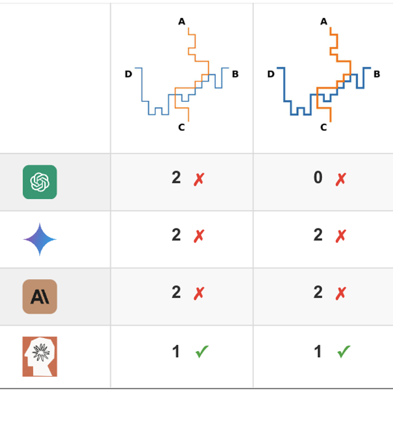
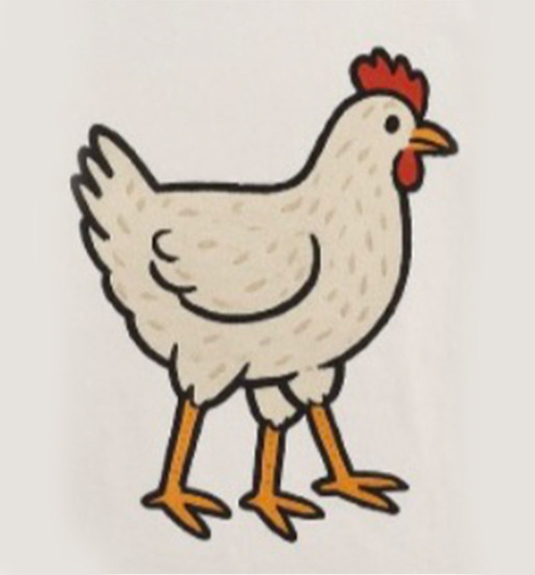
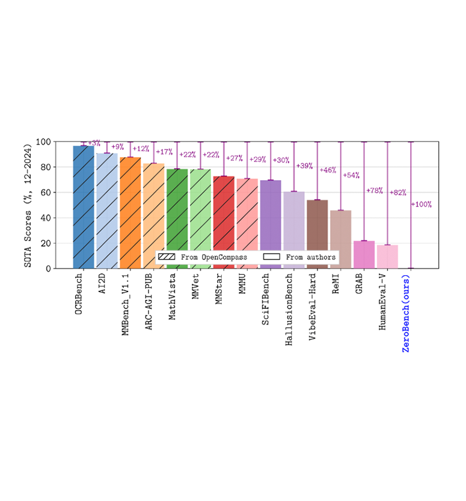
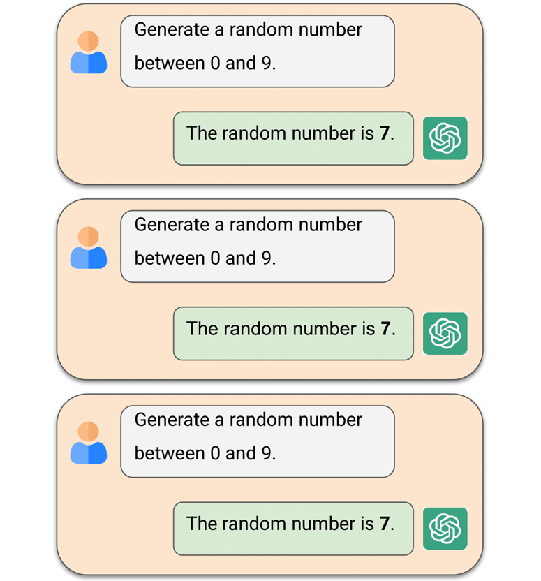
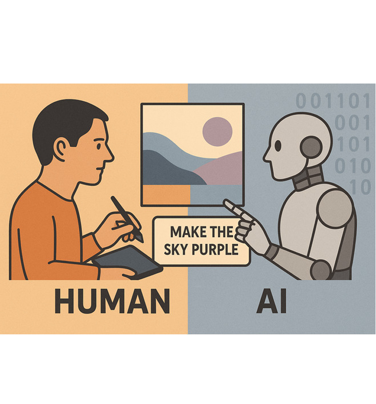
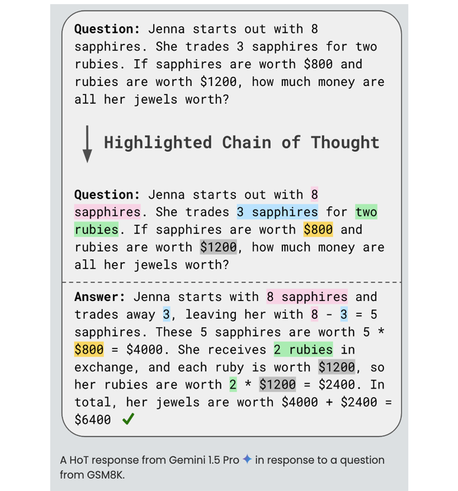
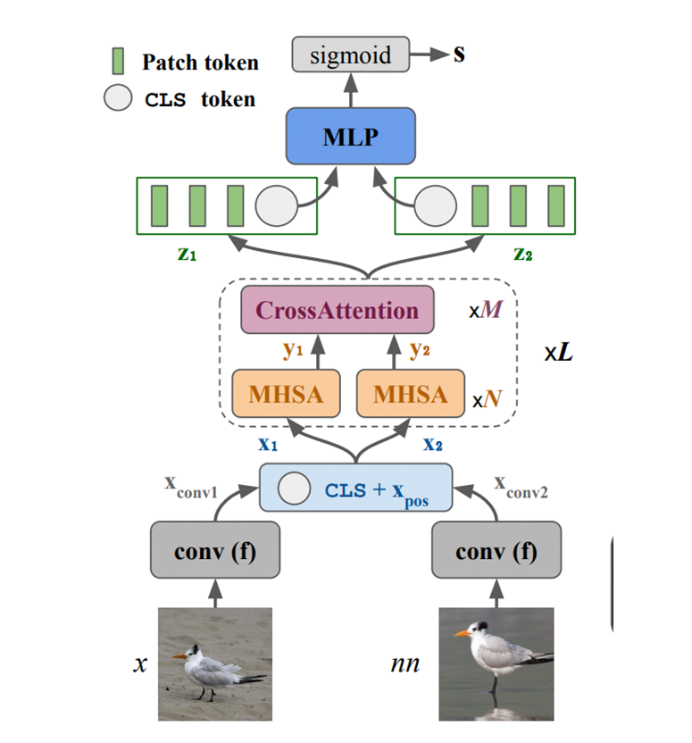
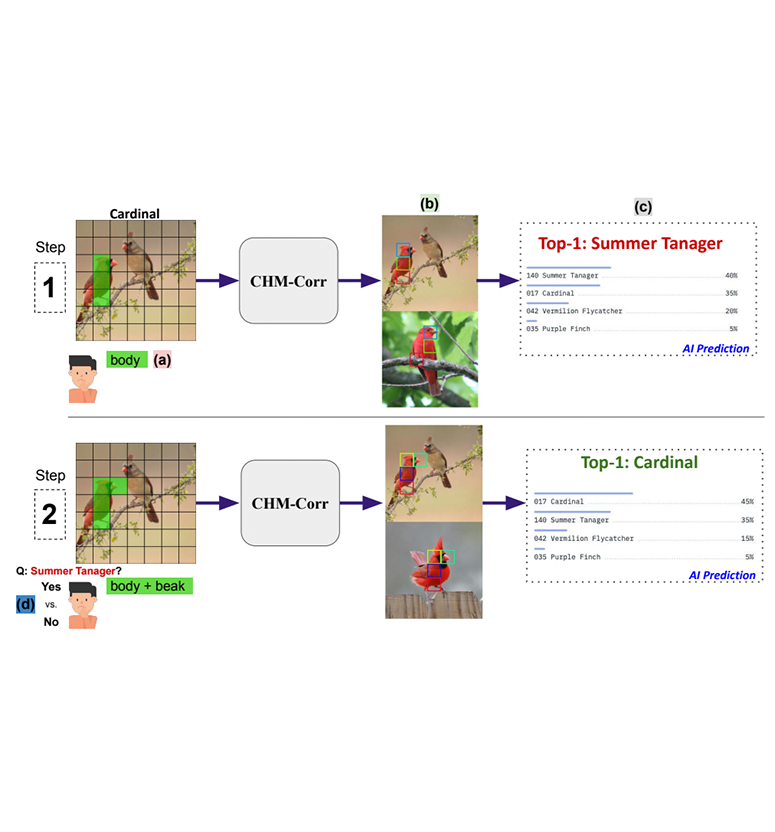
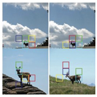

Research
I am broadly interested in large language and vision-language models, with a particular focus on post-training and model evaluation. My work involves stress-testing existing models through extensive benchmarking to elucidate the limitations of different architectural designs and training paradigms. Benchmarks I have developed are used by OpenAI, Google DeepMind, ByteDance, NVIDIA, Alibaba, and other leading research labs.
Highlights

VideoGameQA-Bench: Evaluating Vision-Language Models for Video Game Quality Assurance
NeurIPS Datasets and Benchmarks Track, 2025

Recent Papers



HoT: Highlighted Chain of Thought for Referencing Supporting Facts from Inputs
ArXiv Preprint, 2025







Large Language Models are Pretty Good Zero-Shot Video Game Bug Detectors
ArXiv Preprint, 2022